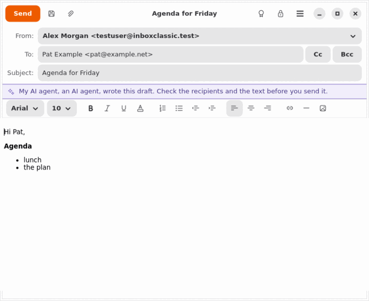

Khi tác nhân gửi thư
Mọi thư mà tác nhân AI muốn gửi đều được hiện cho bạn xem trước, và chờ trong Hộp thư đi trước khi được gửi.
Tác nhân chỉ có thể gửi thư nếu bạn đã cho phép, và mỗi thư chỉ được gửi sau khi bạn đồng ý.

Khi tác nhân muốn gửi, Inbox Classic hiện thư cùng địa chỉ của từng người nhận. Các địa chỉ bạn chưa từng viết thư đến được đánh dấu Địa chỉ mới.
- Đọc danh sách người nhận và nội dung thư.
- Chọn một trong các nút:
- Gửi đưa thư vào hàng đợi gửi. Nút này chỉ dùng được sau một lúc ngắn, để tránh xác nhận nhầm.
- Sửa trước mở thư trong một thư mới để bạn sửa.
- Không gửi, lựa chọn mặc định, không gửi thư.
Tác nhân hỏi về từng thư một. Nếu bạn chưa trả lời ngay, tác nhân được báo rằng thư đang chờ bạn, và nó có thể hỏi sau xem bạn đã quyết định thế nào. Theo mặc định, thư và thư nháp tác nhân viết kết thúc bằng chữ ký của bạn, giống như thư của bạn, nhưng tác nhân có thể bỏ chữ ký.
Thư đã được phê duyệt chờ 30 giây trong Hộp thư đi trước khi bắt đầu gửi. Nhật ký ghi lại việc đưa vào hàng đợi, không phải việc gửi đến nơi. Khi thư vẫn còn ở đó, kể cả sau 30 giây, bạn có thể xóa thư ở đó, hoặc bấm Hoàn tác trong Công cụ > Tác nhân AI.
Trả lời lời mời
Tác nhân được phép gửi thư có thể chấp nhận, chấp nhận tạm thời hoặc từ chối một lời mời lịch thay bạn, qua cùng câu hỏi đó. Phía trên nội dung, câu hỏi cho biết thư trả lời lời mời nào và sự kiện diễn ra khi nào. Inbox Classic viết thư trả lời cho người tổ chức từ chính lời mời, nên bạn không thể mở thư ra để sửa trước. Mỗi thư trả lời cần bạn phê duyệt và không có chữ ký của tài khoản. Câu trả lời trên máy của bạn thay đổi sau khi máy chủ thư chấp nhận thư. Điều này không xác nhận rằng lịch của người tổ chức đã nhận được phản hồi.
Thư nháp do tác nhân viết
Khi bạn mở một thư nháp do tác nhân viết, một dòng phía trên thư nêu tên tác nhân. Hãy kiểm tra người nhận và nội dung trước khi gửi.

Tác nhân có thể sửa hoặc xóa thư nháp của nó cho đến khi bạn lưu thư trong trình soạn thảo, kể cả khi trình soạn thảo tự động lưu. Từ lúc đó, thư nháp thuộc về bạn.